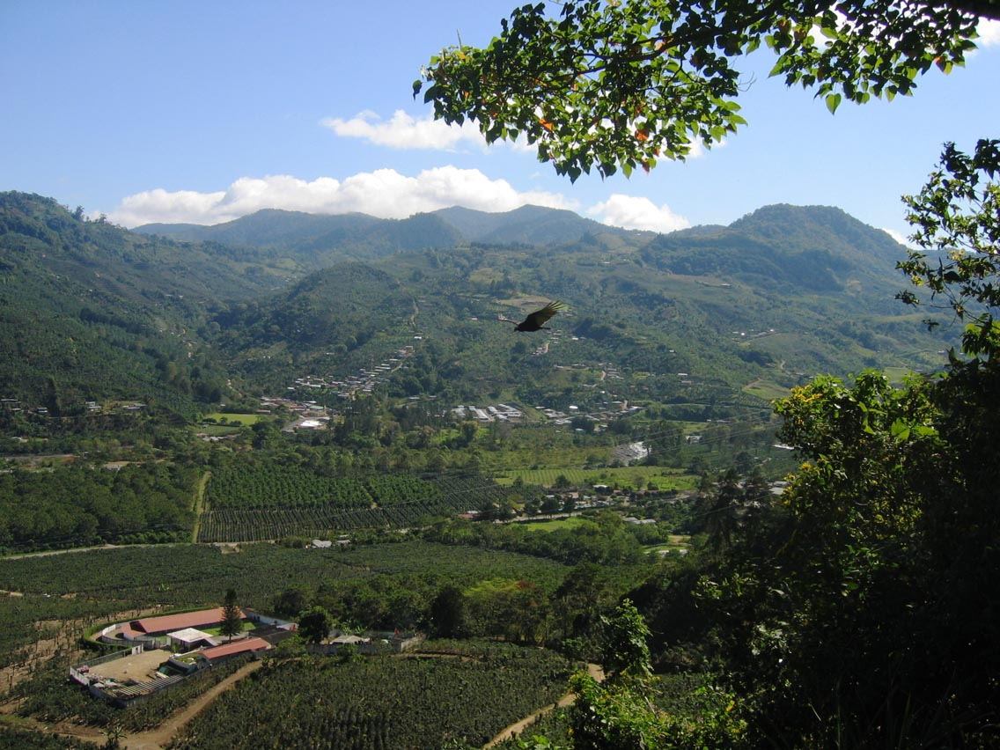

-
Costa Rica
Coffee production in the country began in 1779 in the Meseta Central which had ideal soil and climate conditions for coffee plantations. Coffea arabica first imported to Europe through Arabia, whence it takes its name, was introduced to the country directly from Ethiopia. In the nineteenth century, the Costa Rican government strongly encouraged coffee production, and the industry fundamentally transformed a colonial regime and village economy built on direct extraction by a city-based elite towards organized production for export on a larger scale. The government offered farmers plots of land for anybody who wanted to harvest the plants. The coffee plantation system in the country therefore developed in the nineteenth century largely as result of the government's open policy, although the problem with coffee barons did play a role in internal differentiation and inequality in growth.[2] Soon coffee became a major source of revenue surpassing cacao, tobacco, and sugar production as early as 1829.
 Coffee production in the country relies on cheap, seasonal labor: Nicaraguan immigrants are often employed on these plantations. Coffee cultivators in the country are paid very little, often as little as US$1.5 per basket picked, but the wages are not less than in many other industries of the Costa Rican primary sectors.[11] The berries are picked by the workers and are transported to processing plants to be washed and to remove the pulp around the beans. In Costa Rica the processing plants where this process is done are called beneficios but the effects of pulp removal may result in non-beneficial environmental effects (see below). The beans are then laid out to dry in the sun, then sorted according to size and shape. Although mechanical drying is gradually replacing manual labor in places, time-consuming sun drying, and equipment are required to dry the wet seeds after pulping.[12] Once processing is complete, the coffee is bagged into burlap sacks (with or without a moisture barrier bag) and stored until exported.
Although coffee production in Costa Rica is a major source of revenue, it is not without its environmental problems. The main effect on the environment is the pollution of rivers during the separation and de-pulping process at the beneficio processing plants or mills. After the beans are separated from the pulp, the beans are left to ferment in a water tank to remove the gummy gel that surrounds the bean. By the end of the drying process, there is leftover pulp and sugar water. In the past, many coffee producers dumped the pulp waste directly into the rivers. Approximately 57% of the coffee bean consists of contaminants which destroy wildlife in rivers and may harm people.[citation needed] The pulp as it decays in river water has the effect of depleting the water of oxygen and killing off aquatic life.